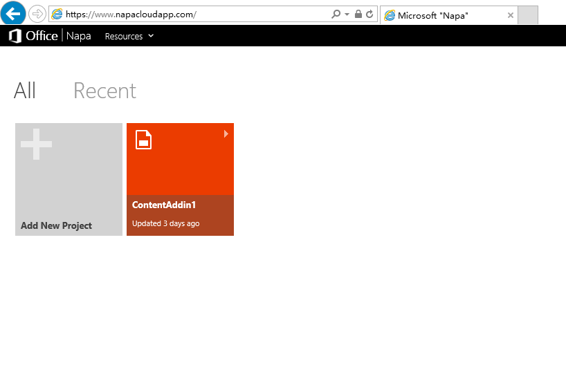
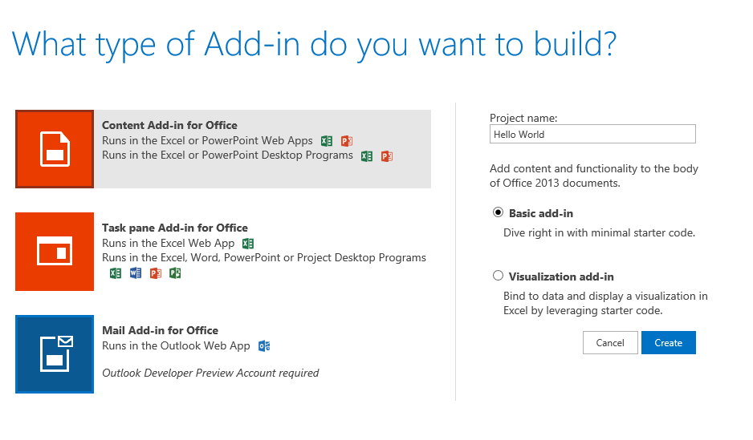
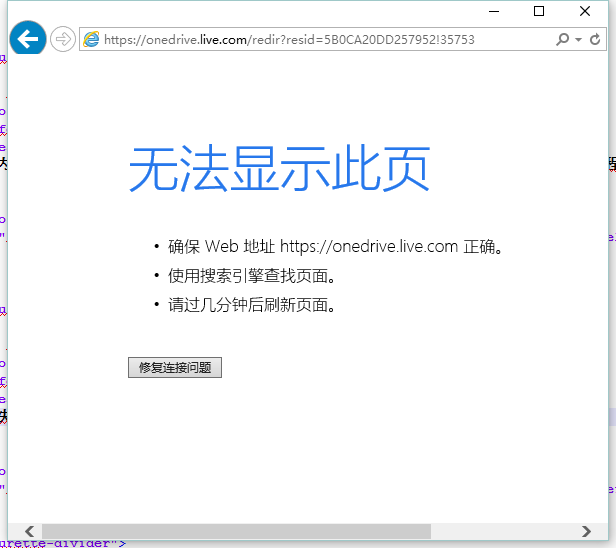

您所在的位置：什么是 Office 扩展应用》Hello World 应用
Hello World 应用
准备工作
开发 Office 扩展应用基本等同于开发常见的 Web 应用程序，扩展应用实际运行内嵌于 Office 平台上的 iframe 中。
您可以将 Web 应用的开发体验无缝地迁移到 Office 扩展应用开发中：
- 通过 JavaScript 和成熟框架（如 jQuery） 实现交互式 UI 和自定义逻辑；
- 利用 HTTP 协议和 AJAX 异步编程技术调用相应数据源的 REST API 或其他 Web 服务；
- 使用服务器端脚本语言（如 ASP 或 PHP）实现，这些语言运行于服务器端；
- 利用 HTML5 、CSS3 优化网页表现和布局。
- 在已安装 Office 2013 （富客户端）和 Visual Studio 2012 （或更新版本）的 PC 机上进行开发。
- 使用 Office 365 网页版开发工具（Napa）进行开发 - 无需安装任何客户端软件，需要 Microsoft 帐户登录。
创建并调试一个 Office 内容应用 - Hello World
1. 打开 Napa
通过点击上述链接，并用 Microsoft 账号登录，进入 Napa 开发工具。

2. 创建一个 Office 内容应用。
点击“添加新的项目”，并输入项目名称，选择“Office 内容应用”， 点击“创建”。

3. 点击“运行项目”，等待响应
创建完新的内容应用项目后，Napa自动添加了简单的测试程序，您只需点击“运行项目”，等待程序部署。

4. 可能遇到网页不能访问或者证书过期。
具体如何解决这类问题，会在这里更新。

相关链接